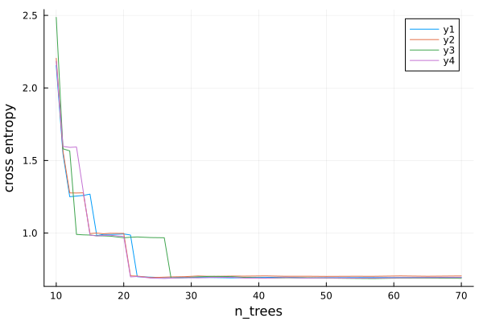
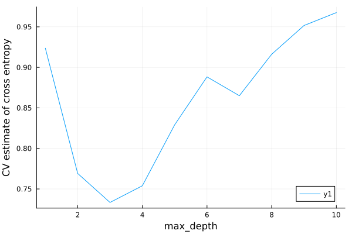
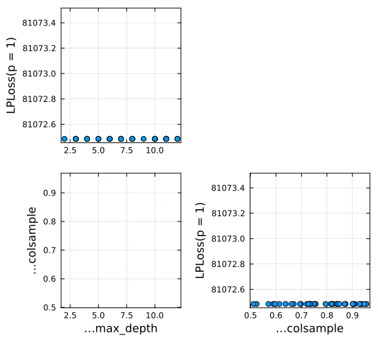

Solutions to Exercises
using MLJ, Downloads, CSV, DataFrames, PlotsExercise 1 solution
scitype(42)ScientificTypesBase.Countquestions = ["who", "why", "what", "when"]
scitype(questions)AbstractVector{Textual} (alias for AbstractArray{ScientificTypesBase.Textual, 1})elscitype(questions)ScientificTypesBase.Textualt = (3.141, 42, "how")
scitype(t)Tuple{ScientificTypesBase.Continuous, ScientificTypesBase.Count, ScientificTypesBase.Textual}A = rand(2, 3)2×3 Matrix{Float64}:
0.436654 0.811629 0.363581
0.781021 0.0747531 0.439646scitype(A)AbstractMatrix{Continuous} (alias for AbstractArray{ScientificTypesBase.Continuous, 2})elscitype(A)ScientificTypesBase.Continuoususing SparseArrays
Asparse = sparse(A)2×3 SparseArrays.SparseMatrixCSC{Float64, Int64} with 6 stored entries:
0.436654 0.811629 0.363581
0.781021 0.0747531 0.439646scitype(Asparse)AbstractMatrix{Continuous} (alias for AbstractArray{ScientificTypesBase.Continuous, 2})C = coerce(A, Multiclass)2×3 CategoricalArrays.CategoricalArray{Float64,2,UInt32}:
0.436654 0.811629 0.363581
0.781021 0.0747531 0.439646scitype(C)AbstractMatrix{Multiclass{6}} (alias for AbstractArray{ScientificTypesBase.Multiclass{6}, 2})elscitype(C)ScientificTypesBase.Multiclass{6}v = [1, 2, missing, 4]
scitype(v)AbstractVector{Union{Missing, Count}} (alias for AbstractArray{Union{Missing, ScientificTypesBase.Count}, 1})elscitype(v)Union{Missing, ScientificTypesBase.Count}scitype(v[1:2])AbstractVector{Union{Missing, Count}} (alias for AbstractArray{Union{Missing, ScientificTypesBase.Count}, 1})Exercise 2 solution
From the question statement, we have:
quality = ["good", "poor", "poor", "excellent", missing, "good", "excellent"]7-element Vector{Union{Missing, String}}:
"good"
"poor"
"poor"
"excellent"
missing
"good"
"excellent"quality = coerce(quality, OrderedFactor);
levels!(quality, ["poor", "good", "excellent"]);
elscitype(quality)Union{Missing, ScientificTypesBase.OrderedFactor{3}}Exercise 3 solution
From the question statement:
url = "https://raw.githubusercontent.com/ablaom/"*
"MachineLearningInJulia2020/for-MLJ-version-0.16/"*
"data/house.csv";
house = CSV.read(Downloads.download(url), DataFrames.DataFrame)
first(house, 4)| Row | price | bedrooms | bathrooms | sqft_living | sqft_lot | floors | waterfront | view | condition | grade | sqft_above | sqft_basement | yr_built | zipcode | lat | long | sqft_living15 | sqft_lot15 | is_renovated |
|---|---|---|---|---|---|---|---|---|---|---|---|---|---|---|---|---|---|---|---|
| Float64 | Int64 | Float64 | Int64 | Int64 | Float64 | Int64 | Int64 | Int64 | Int64 | Int64 | Int64 | Int64 | Int64 | Float64 | Float64 | Int64 | Int64 | Bool | |
| 1 | 221900.0 | 3 | 1.0 | 1180 | 5650 | 1.0 | 0 | 0 | 3 | 7 | 1180 | 0 | 1955 | 98178 | 47.5112 | -122.257 | 1340 | 5650 | true |
| 2 | 538000.0 | 3 | 2.25 | 2570 | 7242 | 2.0 | 0 | 0 | 3 | 7 | 2170 | 400 | 1951 | 98125 | 47.721 | -122.319 | 1690 | 7639 | false |
| 3 | 180000.0 | 2 | 1.0 | 770 | 10000 | 1.0 | 0 | 0 | 3 | 6 | 770 | 0 | 1933 | 98028 | 47.7379 | -122.233 | 2720 | 8062 | true |
| 4 | 604000.0 | 4 | 3.0 | 1960 | 5000 | 1.0 | 0 | 0 | 5 | 7 | 1050 | 910 | 1965 | 98136 | 47.5208 | -122.393 | 1360 | 5000 | true |
First pass:
coerce!(house, autotype(house));
schema(house)┌───────────────┬───────────────────┬───────────────────────────────────┐
│ names │ scitypes │ types │
├───────────────┼───────────────────┼───────────────────────────────────┤
│ price │ Continuous │ Float64 │
│ bedrooms │ OrderedFactor{13} │ CategoricalValue{Int64, UInt32} │
│ bathrooms │ OrderedFactor{30} │ CategoricalValue{Float64, UInt32} │
│ sqft_living │ Count │ Int64 │
│ sqft_lot │ Count │ Int64 │
│ floors │ OrderedFactor{6} │ CategoricalValue{Float64, UInt32} │
│ waterfront │ OrderedFactor{2} │ CategoricalValue{Int64, UInt32} │
│ view │ OrderedFactor{5} │ CategoricalValue{Int64, UInt32} │
│ condition │ OrderedFactor{5} │ CategoricalValue{Int64, UInt32} │
│ grade │ OrderedFactor{12} │ CategoricalValue{Int64, UInt32} │
│ sqft_above │ Count │ Int64 │
│ sqft_basement │ Count │ Int64 │
│ yr_built │ Count │ Int64 │
│ zipcode │ OrderedFactor{70} │ CategoricalValue{Int64, UInt32} │
│ lat │ Continuous │ Float64 │
│ long │ Continuous │ Float64 │
│ sqft_living15 │ Count │ Int64 │
│ sqft_lot15 │ Count │ Int64 │
│ is_renovated │ OrderedFactor{2} │ CategoricalValue{Bool, UInt32} │
└───────────────┴───────────────────┴───────────────────────────────────┘
All the "sqft" fields refer to "square feet" so are really Continuous. We'll regard :yr_built (the other Count variable above) as Continuous as well. So:
coerce!(house, Count => Continuous);And :zipcode should not be ordered:
coerce!(house, :zipcode => Multiclass);
schema(house)┌───────────────┬───────────────────┬───────────────────────────────────┐
│ names │ scitypes │ types │
├───────────────┼───────────────────┼───────────────────────────────────┤
│ price │ Continuous │ Float64 │
│ bedrooms │ OrderedFactor{13} │ CategoricalValue{Int64, UInt32} │
│ bathrooms │ OrderedFactor{30} │ CategoricalValue{Float64, UInt32} │
│ sqft_living │ Continuous │ Float64 │
│ sqft_lot │ Continuous │ Float64 │
│ floors │ OrderedFactor{6} │ CategoricalValue{Float64, UInt32} │
│ waterfront │ OrderedFactor{2} │ CategoricalValue{Int64, UInt32} │
│ view │ OrderedFactor{5} │ CategoricalValue{Int64, UInt32} │
│ condition │ OrderedFactor{5} │ CategoricalValue{Int64, UInt32} │
│ grade │ OrderedFactor{12} │ CategoricalValue{Int64, UInt32} │
│ sqft_above │ Continuous │ Float64 │
│ sqft_basement │ Continuous │ Float64 │
│ yr_built │ Continuous │ Float64 │
│ zipcode │ Multiclass{70} │ CategoricalValue{Int64, UInt32} │
│ lat │ Continuous │ Float64 │
│ long │ Continuous │ Float64 │
│ sqft_living15 │ Continuous │ Float64 │
│ sqft_lot15 │ Continuous │ Float64 │
│ is_renovated │ OrderedFactor{2} │ CategoricalValue{Bool, UInt32} │
└───────────────┴───────────────────┴───────────────────────────────────┘
:bathrooms looks like it has a lot of levels, but on further inspection we see why, and OrderedFactor remains appropriate.
import StatsBase.countmap
d = countmap(house.bathrooms)
for (level, count) in d
println("$level \t=> $count")
end5.0 => 21
5.25 => 13
1.25 => 9
8.0 => 2
6.75 => 2
1.0 => 3852
5.5 => 10
0.0 => 10
6.0 => 6
6.25 => 2
4.75 => 23
3.25 => 589
3.0 => 753
2.25 => 2047
0.5 => 4
7.5 => 1
5.75 => 4
1.5 => 1446
3.75 => 155
4.0 => 136
4.25 => 79
2.0 => 1930
2.75 => 1185
3.5 => 731
6.5 => 2
1.75 => 3048
0.75 => 72
2.5 => 5380
4.5 => 100
7.75 => 1
Exercise 4 solution
From the question statement:
import Distributions
poisson = Distributions.Poisson
age = 18 .+ 60*rand(10);
salary = coerce(rand(["small", "big", "huge"], 10), OrderedFactor);
levels!(salary, ["small", "big", "huge"]);
small = salary[1]
X4 = DataFrames.DataFrame(age=age, salary=salary)
n_devices(salary) = salary > small ? rand(poisson(1.3)) : rand(poisson(2.9))
y4 = [n_devices(row.salary) for row in eachrow(X4)]10-element Vector{Int64}:
5
1
4
2
2
2
0
4
3
14(a)
models(matching(X4, y4))2-element Vector{NamedTuple{(:name, :package_name, :is_supervised, :abstract_type, :constructor, :deep_properties, :docstring, :fit_data_scitype, :human_name, :hyperparameter_ranges, :hyperparameter_types, :hyperparameters, :implemented_methods, :inverse_transform_scitype, :is_pure_julia, :is_wrapper, :iteration_parameter, :load_path, :package_license, :package_url, :package_uuid, :predict_scitype, :prediction_type, :reporting_operations, :reports_feature_importances, :supports_class_weights, :supports_online, :supports_training_losses, :supports_weights, :tags, :target_in_fit, :transform_scitype, :input_scitype, :target_scitype, :output_scitype)}}:
(name = EvoTreeCount, package_name = EvoTrees, ... )
(name = LinearCountRegressor, package_name = GLM, ... )4(b)
y4 = coerce(y4, Continuous);
models(matching(X4, y4))13-element Vector{NamedTuple{(:name, :package_name, :is_supervised, :abstract_type, :constructor, :deep_properties, :docstring, :fit_data_scitype, :human_name, :hyperparameter_ranges, :hyperparameter_types, :hyperparameters, :implemented_methods, :inverse_transform_scitype, :is_pure_julia, :is_wrapper, :iteration_parameter, :load_path, :package_license, :package_url, :package_uuid, :predict_scitype, :prediction_type, :reporting_operations, :reports_feature_importances, :supports_class_weights, :supports_online, :supports_training_losses, :supports_weights, :tags, :target_in_fit, :transform_scitype, :input_scitype, :target_scitype, :output_scitype)}}:
(name = CatBoostRegressor, package_name = CatBoost, ... )
(name = ConstantRegressor, package_name = MLJModels, ... )
(name = DecisionTreeRegressor, package_name = BetaML, ... )
(name = DecisionTreeRegressor, package_name = DecisionTree, ... )
(name = DeterministicConstantRegressor, package_name = MLJModels, ... )
(name = EvoLinearRegressor, package_name = EvoLinear, ... )
(name = EvoTreeGaussian, package_name = EvoTrees, ... )
(name = EvoTreeMLE, package_name = EvoTrees, ... )
(name = EvoTreeRegressor, package_name = EvoTrees, ... )
(name = LinearRegressor, package_name = GLM, ... )
(name = NeuralNetworkRegressor, package_name = MLJFlux, ... )
(name = RandomForestRegressor, package_name = BetaML, ... )
(name = RandomForestRegressor, package_name = DecisionTree, ... )Exercise 5 solution
data = (
a = [1, 2, 3, 4],
b = rand(4),
c = rand(4),
d = coerce(["male", "female", "female", "male"], OrderedFactor),
);
using Tables
y, X, w = unpack(
data,
==(:a),
name -> elscitype(Tables.getcolumn(data, name)) == Continuous,
)
y4-element Vector{Int64}:
1
2
3
4pretty(X)┌────────────┬────────────┐
│ b │ c │
│ Float64 │ Float64 │
│ Continuous │ Continuous │
├────────────┼────────────┤
│ 0.961707 │ 0.368005 │
│ 0.834368 │ 0.482366 │
│ 0.543462 │ 0.680675 │
│ 0.41441 │ 0.273404 │
└────────────┴────────────┘
w4-element CategoricalArrays.CategoricalArray{String,1,UInt32}:
"male"
"female"
"female"
"male"Exercise 6 solution
From the question statement:
import Downloads
import CSV
url = "https://raw.githubusercontent.com/ablaom/"*
"MachineLearningInJulia2020/"*
"for-MLJ-version-0.16/data/horse.csv"
csv_file = Downloads.download(url)
horse = CSV.read(csv_file, DataFrames.DataFrame)
coerce!(horse, autotype(horse));
coerce!(horse, Count => Continuous);
coerce!(
horse,
:surgery => Multiclass,
:age => Multiclass,
:mucous_membranes => Multiclass,
:capillary_refill_time => Multiclass,
:outcome => Multiclass,
:cp_data => Multiclass,
);
schema(horse)┌─────────────────────────┬──────────────────┬─────────────────────────────────┐
│ names │ scitypes │ types │
├─────────────────────────┼──────────────────┼─────────────────────────────────┤
│ surgery │ Multiclass{2} │ CategoricalValue{Int64, UInt32} │
│ age │ Multiclass{2} │ CategoricalValue{Int64, UInt32} │
│ rectal_temperature │ Continuous │ Float64 │
│ pulse │ Continuous │ Float64 │
│ respiratory_rate │ Continuous │ Float64 │
│ temperature_extremities │ OrderedFactor{4} │ CategoricalValue{Int64, UInt32} │
│ mucous_membranes │ Multiclass{6} │ CategoricalValue{Int64, UInt32} │
│ capillary_refill_time │ Multiclass{3} │ CategoricalValue{Int64, UInt32} │
│ pain │ OrderedFactor{5} │ CategoricalValue{Int64, UInt32} │
│ peristalsis │ OrderedFactor{4} │ CategoricalValue{Int64, UInt32} │
│ abdominal_distension │ OrderedFactor{4} │ CategoricalValue{Int64, UInt32} │
│ packed_cell_volume │ Continuous │ Float64 │
│ total_protein │ Continuous │ Float64 │
│ outcome │ Multiclass{3} │ CategoricalValue{Int64, UInt32} │
│ surgical_lesion │ OrderedFactor{2} │ CategoricalValue{Int64, UInt32} │
│ cp_data │ Multiclass{2} │ CategoricalValue{Int64, UInt32} │
└─────────────────────────┴──────────────────┴─────────────────────────────────┘
6(a)
y, X = unpack(
horse,
==(:outcome),
name -> elscitype(Tables.getcolumn(horse, name)) == Continuous,
)
schema(X)┌────────────────────┬────────────┬─────────┐
│ names │ scitypes │ types │
├────────────────────┼────────────┼─────────┤
│ rectal_temperature │ Continuous │ Float64 │
│ pulse │ Continuous │ Float64 │
│ respiratory_rate │ Continuous │ Float64 │
│ packed_cell_volume │ Continuous │ Float64 │
│ total_protein │ Continuous │ Float64 │
└────────────────────┴────────────┴─────────┘
6(b)(i)
train, test = partition(eachindex(y), 0.7)
LogisticClassifier = @load LogisticClassifier pkg=MLJLinearModels
model = LogisticClassifier()
model.lambda = 100
mach = machine(model, X, y)
fit!(mach, rows=train)
fitted_params(mach)(classes = CategoricalArrays.CategoricalValue{Int64, UInt32}[CategoricalValue(CategoricalArrays.CategoricalPool{Int64, UInt32}([1, 2, 3]), 1), CategoricalValue(CategoricalArrays.CategoricalPool{Int64, UInt32}([1, 2, 3]), 2), CategoricalValue(CategoricalArrays.CategoricalPool{Int64, UInt32}([1, 2, 3]), 3)], coefs = Pair{Symbol, SubArray{Float64, 1, Matrix{Float64}, Tuple{Int64, Base.Slice{Base.OneTo{Int64}}}, true}}[:rectal_temperature => [0.01679940181352405, -0.006529534963799633, -0.010269866849724429], :pulse => [-0.002078922183617693, 0.00248508277505068, -0.00040616059143293954], :respiratory_rate => [-0.002078922183617693, 0.00248508277505068, -0.00040616059143293954], :packed_cell_volume => [0.0026345470622363147, 0.002707772252298626, -0.005342319314534946], :total_protein => [0.009110258500266177, -0.01679787903626504, 0.0076876205359988755]], intercept = [0.00043563961897106053, -0.00016706727792654562, -0.0005913867104289383])coefs_given_feature = Dict(fitted_params(mach).coefs)
coefs_given_feature[:pulse]
#6(b)(ii)
yhat = predict(mach, rows=test); # or predict(mach, X[test,:])
err = log_loss(yhat, y[test])0.83347754854419696(b)(iii)
The predicted probabilities of the actual observations in the test are given by
p = broadcast(pdf, yhat, y[test]);The number of times this probability exceeds 50% is:
n50 = filter(x -> x > 0.5, p) |> length58Or, as a proportion:
n50/length(test)0.52727272727272726(b)(iv)
misclassification_rate(mode.(yhat), y[test])0.31818181818181826(c)(i)
RandomForestClassifier = @load RandomForestClassifier pkg=DecisionTree
model = RandomForestClassifier()
mach = machine(model, X, y)
evaluate!(mach, resampling=CV(nfolds=6), measure=log_loss)PerformanceEvaluation object with these fields:
model, tag, measure, operation,
measurement, uncertainty_radius_95, per_fold, per_observation,
fitted_params_per_fold, report_per_fold,
train_test_rows, resampling, repeats
Tag: RandomForestClassifier-171
Extract:
┌──────────────────────┬───────────┬─────────────┐
│ measure │ operation │ measurement │
├──────────────────────┼───────────┼─────────────┤
│ LogLoss( │ predict │ 1.1 │
│ tol = 2.22045e-16) │ │ │
└──────────────────────┴───────────┴─────────────┘
┌───────────────────────────────────────┬─────────┐
│ per_fold │ 1.96*SE │
├───────────────────────────────────────┼─────────┤
│ [1.28, 1.38, 1.76, 0.778, 0.72, 0.66] │ 0.391 │
└───────────────────────────────────────┴─────────┘
r = range(model, :n_trees, lower=10, upper=70, scale=:log10)NumericRange(10 ≤ n_trees ≤ 70; origin=40.0, unit=30.0; on log10 scale)Since random forests are inherently randomized, we generate multiple curves:
curves = learning_curve(
mach,
range=r,
resampling=Holdout(),
measure=log_loss,
rngs=4,
rng_name=:rng,
)
plt = plot(curves.parameter_values, curves.measurements)
xlabel!(plt, "n_trees")
ylabel!(plt, "cross entropy")
savefig("exercise_6ci.png")"/home/runner/work/MLJTutorial.jl/MLJTutorial.jl/docs/src/notebooks/MLJTutorial/99_solution_to_exercises/exercise_6ci.png"
6(c)(ii)
evaluate!(mach, resampling=CV(nfolds=9),
measure=log_loss,
rows=train).measurement[1]
model.n_trees = 90906(c)(iii)
err_forest =
evaluate!(mach, resampling=Holdout(), measure=log_loss).measurement[1]1.285130671948529Exercise 7
7(a)
KMeans = @load KMeans pkg=Clustering
EvoTreeClassifier = @load EvoTreeClassifier
pipe = Standardizer |>
ContinuousEncoder |>
KMeans(k=10) |>
EvoTreeClassifier(nrounds=50)ProbabilisticPipeline(
standardizer = Standardizer(
features = Symbol[],
ignore = false,
ordered_factor = false,
count = false),
continuous_encoder = ContinuousEncoder(
drop_last = false,
one_hot_ordered_factors = false),
k_means = KMeans(
k = 10,
metric = Distances.SqEuclidean(0.0),
init = :kmpp),
evo_tree_classifier = EvoTreeClassifier(
loss = :mlogloss,
metric = :mlogloss,
nrounds = 50,
bagging_size = 1,
early_stopping_rounds = 9223372036854775807,
early_stopping_tolerance = 0.0,
L2 = 1.0,
lambda = 0.0,
gamma = 0.0,
eta = 0.1,
max_depth = 6,
min_weight = 1.0,
rowsample = 1.0,
colsample = 1.0,
nbins = 64,
tree_type = :binary,
seed = 123,
device = :cpu),
cache = true)7(b)
mach = machine(pipe, X, y)
evaluate!(mach, resampling=CV(nfolds=6), measure=log_loss)PerformanceEvaluation object with these fields:
model, tag, measure, operation,
measurement, uncertainty_radius_95, per_fold, per_observation,
fitted_params_per_fold, report_per_fold,
train_test_rows, resampling, repeats
Tag: ProbabilisticPipeline-956
Extract:
┌──────────────────────┬───────────┬─────────────┐
│ measure │ operation │ measurement │
├──────────────────────┼───────────┼─────────────┤
│ LogLoss( │ predict │ 0.92 │
│ tol = 2.22045e-16) │ │ │
└──────────────────────┴───────────┴─────────────┘
┌──────────────────────────────────────────┬─────────┐
│ per_fold │ 1.96*SE │
├──────────────────────────────────────────┼─────────┤
│ [0.943, 1.27, 0.779, 0.792, 0.95, 0.786] │ 0.166 │
└──────────────────────────────────────────┴─────────┘
7(c)
r = range(pipe, :(evo_tree_classifier.max_depth), lower=1, upper=10)
curve = learning_curve(
mach,
range=r,
resampling=CV(nfolds=6),
measure=log_loss,
)
plt = plot(curve.parameter_values, curve.measurements)
xlabel!(plt, "max_depth")
ylabel!(plt, "CV estimate of cross entropy")
savefig("exercise_7c.png")"/home/runner/work/MLJTutorial.jl/MLJTutorial.jl/docs/src/notebooks/MLJTutorial/99_solution_to_exercises/exercise_7c.png"
Exercise 8
From the question statement:
y, X = unpack(house, ==(:price), rng=123); # from Exercise 3
EvoTreeRegressor = @load EvoTreeRegressor
tree_booster = EvoTreeRegressor(nrounds = 70)
model = ContinuousEncoder |> tree_booster
r2 = range(model, :(evo_tree_regressor.nbins), values = [32, 64, 128])NominalRange(evo_tree_regressor.nbins = 32, 64, 128)(a)
r1 = range(model, :(evo_tree_regressor.max_depth), lower=4, upper=14)NumericRange(4 ≤ evo_tree_regressor.max_depth ≤ 14; origin=9.0, unit=5.0)(b)
tuned_model = TunedModel(
model;
ranges=[r1, r2],
resampling=Holdout(),
measures=mae,
tuning=RandomSearch(rng=123),
n=40,
)
tuned_mach = machine(tuned_model, X, y) |> fit!
plt = plot(tuned_mach)
savefig("exercise_8c.png")"/home/runner/work/MLJTutorial.jl/MLJTutorial.jl/docs/src/notebooks/MLJTutorial/99_solution_to_exercises/exercise_8c.png"
(c)
best_model = report(tuned_mach).best_model;
best_mach = machine(best_model, X, y);
best_err = evaluate!(best_mach, resampling=CV(nfolds=3), measure=mae)PerformanceEvaluation object with these fields:
model, tag, measure, operation,
measurement, uncertainty_radius_95, per_fold, per_observation,
fitted_params_per_fold, report_per_fold,
train_test_rows, resampling, repeats
Tag: DeterministicPipeline-792
Extract:
┌──────────┬───────────┬─────────────┐
│ measure │ operation │ measurement │
├──────────┼───────────┼─────────────┤
│ LPLoss( │ predict │ 66800.0 │
│ p = 1) │ │ │
└──────────┴───────────┴─────────────┘
┌─────────────────────────────┬─────────┐
│ per_fold │ 1.96*SE │
├─────────────────────────────┼─────────┤
│ [66200.0, 66700.0, 67500.0] │ 941.0 │
└─────────────────────────────┴─────────┘
tuned_err = evaluate!(tuned_mach, resampling=CV(nfolds=3), measure=mae)PerformanceEvaluation object with these fields:
model, tag, measure, operation,
measurement, uncertainty_radius_95, per_fold, per_observation,
fitted_params_per_fold, report_per_fold,
train_test_rows, resampling, repeats
Tag: DeterministicTunedModel-143
Extract:
┌──────────┬───────────┬─────────────┐
│ measure │ operation │ measurement │
├──────────┼───────────┼─────────────┤
│ LPLoss( │ predict │ 67600.0 │
│ p = 1) │ │ │
└──────────┴───────────┴─────────────┘
┌─────────────────────────────┬─────────┐
│ per_fold │ 1.96*SE │
├─────────────────────────────┼─────────┤
│ [67600.0, 67800.0, 67500.0] │ 214.0 │
└─────────────────────────────┴─────────┘
This page was generated using Literate.jl.